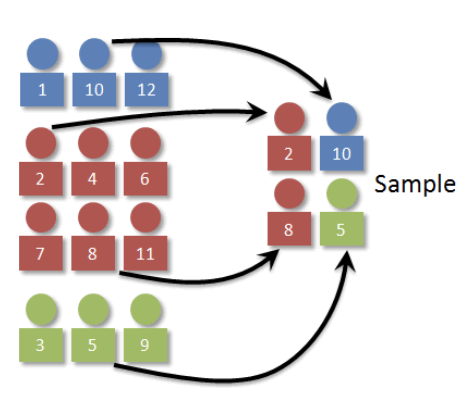
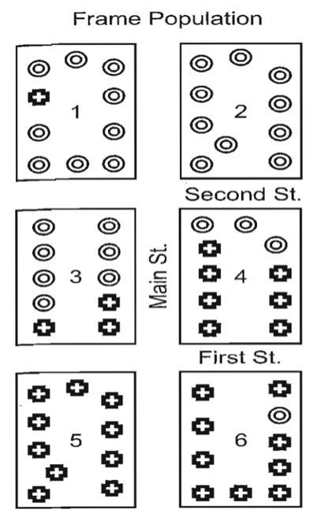
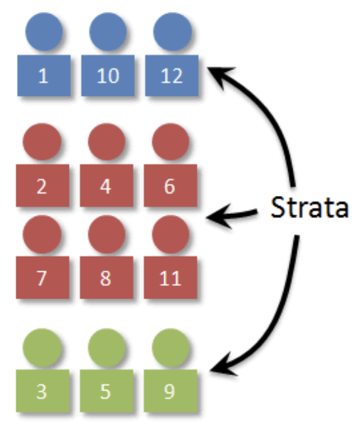
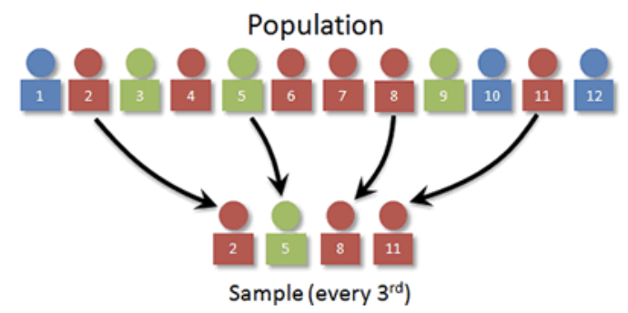

조사방법론 | 2. 표본설계
1 표본설계 개요
표본 설계가 필요한 이유는 다음과 같다.
| 이유 | 내용 |
|---|---|
| 대표성 확보 | 모집단 전체 조사가 불가능하므로 대표 표본 구성이 필수 |
| 편향 방지 | 모든 하위 그룹이 적절히 포함되도록 구성하여 왜곡 방지 |
| 자원 효율화 | 층화·군집 등 최적 방법으로 시간·비용 절감 |
| 신뢰성 향상 | 체계적 설계로 통계적 편향과 오차 감소 |
| 세분화 분석 | 특정 하위 집단을 적절히 포함·과대표하여 정밀 분석 가능 |
1.1 용어
표본추출: 표본을 모집단으로부터 확률적으로 선택하는 과정. 조사 목적 달성을 최대화하도록 설계되어야 한다.
표본 크기: 신뢰수준, 표본추출 방법, 허용오차(변동계수 등)를 종합 고려하여 결정한다.
1.2 표본과 추정
설문조사의 주목적은 모집단 평균 \(\overline{Y}\)를 추정하는 것이다. 각 조사는 가능한 확률 표본 설계 중 하나의 실현(realization)으로 간주된다.
| 구분 | 표본 분포 | 모집단 분포 | 표본평균 분포 |
|---|---|---|---|
| 현황 | 실현된 분포 | 모름 | 모름 |
| 크기 | \(i = 1,2,\ldots,n\) | \(i = 1,2,\ldots,N\) | \(s = 1,2,\ldots,S\) |
| 개별 원소 | \(y_{i}\) | \(Y_{i}\) | \({\overline{y}}_{s}\) |
| 평균 | \(\overline{y}\) | \(\overline{Y}\) | \(E({\overline{y}}_{s})\) |
| 분포 분산 | \(s^{2}\) | \(S^{2}\) | \(V(\overline{y})\) |
| 표준오차 | \(s\) | \(S\) | \(se(\overline{y})\) |
표준오차: \(se(\overline{y}) = \sqrt{v(\overline{y})}\)
예시: \(\overline{y} = 42\)(천원), \(se = 2\)천원 → 95% 신뢰구간 = \((38,\ 46)\)
샘플링 오류의 정도는 다음 네 가지 원칙에 의해 결정된다.
- 선택된 표본의 크기
- 각 모집단 요소가 표본에 선택될 확률
- 요소가 독립적 또는 군집(cluster) 단위로 선택되는지 여부
- 표본이 주요 하위 모집단의 대표성을 제어하도록 층화 설계되었는지 여부
1.3 표본설계 절차
| 단계 | 내용 | 핵심 고려사항 |
|---|---|---|
| ① 조사 목표 정의 | 누구를 대상으로 무엇을 조사할지 규정 | 모집단이 목표에 따라 달라짐 |
| ② 모집단 정의·분석 | 크기, 인구 구성, 지리적 분포 파악 | 대표성 확보의 기초 |
| ③ 표본 프레임 정의 | 모집단 접근 목록 구성 (고객 리스트, 전화번호부 등) | 포괄성·중복 여부·최신성 점검 |
| ④ 표본 설계 유형 선택 | SRS, 층화, 군집, 다단계 중 선택 | 이질성·프레임 구조·예산·시간 |
| ⑤ 표본 크기 결정 | 허용오차·신뢰수준·변동성 기반 산정 | 정밀도와 비용의 균형 |
| ⑥ 표본 추출 | 설계 유형에 따라 무작위 선택 | 주관적 판단 배제, 무작위성 확보 |
| ⑦ 조사·데이터 수집 | 설문·전화 인터뷰 등으로 자료 수집 | 높은 응답률 확보 전략 병행 |
| ⑧ 자료 분석·검토 | 가중치 적용, 설계효과(design effect) 산출 | 편향 보정 |
| ⑨ 결과 보고 | 설계 방법·표본 크기·한계점 함께 제시 | 신뢰성·해석 가능성 제공 |
2 표본설계 방법
2.1 단순임의추출방법 SRS Simple Random Sampling
2.1.1 정의 및 절차

단순임의 표본추출은 모집단에 포함된 모든 요소가 동일한 확률로 선택될 수 있도록 하는 표본 추출 방법이다. 즉, 크기 n의 모든 가능한 표본이 동일한 확률로 선택될 수 있도록 설계된다. 이 방법은 대표성과 무작위성을 보장하는 가장 기본적인 확률 표본 추출 방식으로, 표본 추출의 이론적 기준점이 된다.
단순임의 표본추출의 절차는 다음과 같다.
- 표본 프레임에 포함된 N개의 모든 원소에 일련번호를 부여한다.
- 난수 생성기를 활용하여 중복되지 않는 n개의 난수를 생성한다.
- 해당 난수에 해당하는 원소를 표본으로 선택한다.
이 과정은 모집단의 각 구성원이 표본에 포함될 동등한 기회를 가지도록 하며, 편향 없는 표본 구성을 가능하게 한다.
2.1.2 추정
표본평균 및 표본분산
\[\overline{y} = \frac{1}{n}\sum_{i=1}^{n}y_{i}, \quad v(\overline{y}) = \frac{(1-f)}{n}s^{2}\]
비율 추정 (여론조사 등):
\[v(p) = \frac{(1-f)}{n-1}p(1-p)\]
\(v(p)\)는 FPC, \(n\), \(p\)에만 의존 → 개별 \(y_i\) 없이 계산 가능. 표본크기 결정 시 보수적으로 \(p = 0.5\) 사용.
95% 신뢰구간
모집단 평균
\[\overline{y} \pm z_{0.975} \cdot se(\overline{y})\]
\[se(\overline{y}) = \frac{s}{\sqrt{n}}\]
모비율
\[\widehat{p} \pm z_{0.975} \cdot se(\widehat{p})\]
\[se(\widehat{p}) = \frac{\sqrt{p(1-p)}}{\sqrt{n}}\]
표본크기 결정 (허용오차 \(e\))
모평균 추정:
\[n = \frac{N \cdot z^{2} \cdot S^{2}}{(N-1) \cdot e^{2} + z^{2} \cdot S^{2}}\]
모비율 추정:
\[n = \frac{N \cdot z^{2} \cdot p(1-p)}{(N-1) \cdot e^{2} + z^{2} \cdot p(1-p)}\]
모평균 추정:
\[n = \frac{z^{2} \cdot S^{2}}{e^{2}}\]
모비율 추정:
\[n_0 = \frac{z^{2} \cdot p(1-p)}{e^{2}}, \quad n = \frac{n_0}{1 + \dfrac{n_0 - 1}{N}}\]
2.2 군집추출방법 cluster sampling

단순임의추출 vs. 군집추출 비교
| 구분 | 단순임의추출(SRS) | 군집추출 |
|---|---|---|
| 추출 단위 | 개별 요소 | 군집(집단) |
| 비용·시간 | 높음 (전체 프레임 필요) | 낮음 (군집 단위 접근) |
| 대표성 | 높음 | 선택된 군집에 따라 달라짐 |
| 표본 오차 | 작음 | 군집 내 동질성이 높을수록 커짐 |
예시: 총 60가구 → SRS: 무작위 20가구 선택. 군집추출: 10가구씩 6개 단지 중 2개 선택 → 20가구 조사.
2.2.1 군집표본 추출 절차
층화추출과 달리 군집 간 응답 차이가 없다고 가정한다. 선택된 군집 내 구성원만을 대상으로 표본을 추출한다.
- 모집단을 인구학적 특성·지리적 위치 등을 기준으로 군집으로 나눈다.
- 난수를 이용하여 군집을 무작위 선택한다.
- 선택된 군집의 모든 응답자를 포함한다. 군집 크기 > 표본 크기라면 군집 내부에서 SRS 재추출한다.
가구조사 표본추출 사례
가구조사에서는 규모 비례 확률 방법을 사용하여 전국을 200개 지역으로 층화하고, 이후 일련의 계통추출 과정을 통해 가구 내 응답자를 선택한다. 표본추출은 다음과 같은 네 단계로 이루어진다.
첫째, 전국을 12개 층으로 구분한다. 6개 광역도시는 서울, 부산, 대구, 인천, 대전, 광주이며, 8개 도는 경기, 강원, 충청남북도, 경상남북도, 전라남북도로 구분된다. 도 지역은 다시 시, 읍, 면으로 세분화한다.
둘째, 6개 도시와 각 도의 시·읍·면을 모집단으로 배열한 후, 각 지역 내 동(또는 면의 경우 리)을 계통추출 방식으로 선택한다. 이 단계에서 선택된 동 또는 리는 1차 표본 지역(primary sampling location)으로 정의된다. 표본의 전체 크기가 1,500일 경우, 약 200개의 1차 표본 지역이 확보된다.
셋째, 실질적인 최종 표본 지역(actual final sampling location)인 반 또는 부락이 선택될 때까지 계통추출을 반복한다. 반은 대체로 약 20가구, 부락은 20~80가구로 구성된다.
넷째, 조사원은 선정된 표본 지역을 직접 방문하여 주민 명부를 바탕으로 8가구를 임의로 선정한다. 각 가구에서 응답자는 18세 이상인 사람 중 생일이 가장 빠른 사람으로 지정하며, 최초 방문 시 해당 응답자를 만나지 못한 경우에는 재방문하여 조사를 진행한다.
이 사례는 다단계 층화 계통추출의 전형적인 구조를 보여주며, 실제 조사의 대표성과 실현 가능성을 동시에 고려한 표본설계의 예라 할 수 있다.
2.2.2 표본평균 추정
군집 표본평균:
\[\overline{y} = \frac{\sum_{\alpha=1}^{a}\sum_{\beta=1}^{B}y_{\alpha\beta}}{aB}\]
(\(a\): 선택된 군집 수, \(B\): 군집당 가구 수)
평균의 표본분산:
무작위화는 군집(단지)에만 적용되며, 군집이 표본 단위이다.
\[v(\overline{y}) = \left(\frac{1-f}{a}\right)s_a^2\]
\[s_a^2 = \frac{1}{a-1}\sum_{\alpha=1}^{a}(\overline{y}_\alpha - \overline{y})^2\]
2.2.3 설계효과 design effect
군집 내 동질성과 설계효과의 관계:
- 군집 내 동질성이 높을수록 → 추가 요소가 새로운 정보를 주지 못함 → \(d^2\) 증가
- 극단적 예: 교실의 모든 학생이 동일 점수 → 한 명만 조사해도 충분
설계효과와 군집 내 동질성(\(roh\)):
\[d^{2} = 1 + (b-1) \cdot roh\]
\(roh\) 추정:
\[roh = \frac{d^2 - 1}{b - 1}\]
새로운 설계 적용:
\[d_{\text{new}}^2 = 1 + (b_{\text{new}} - 1) \cdot roh_{\text{old}}\]
\[v(\overline{y}) = d_{\text{new}}^2 \cdot \left(\frac{1-f}{n}\right)s^2\]
유효 표본 크기(Effective Sample Size):
\[n_{\text{eff}} = \frac{n}{d^2}\]
예시: \(n = 200\), \(d^2 = 3.13\) → \(n_{\text{eff}} = 200/3.13 \approx 64\) → 실제로는 SRS 64명과 동등한 정밀도
2.3 층화추출방법 stratified sampling

확률 표본 설계는 모집단의 하위 그룹들이 표본 내에 적절히 대표되도록 보장하는 방식으로 개선될 수 있다. 이러한 기능 중 하나가 층화(stratification)이다.
층화는 표본 프레임에 포함된 모집단 요소들이 사전에 정의된 기준에 따라 상호 배타적인 그룹, 즉 층(strata)으로 구분될 수 있는 정보를 가지고 있다는 전제에 기반한다. 각 요소는 오직 하나의 층에만 속할 수 있으며, 이처럼 나뉜 층은 서로 겹치지 않는 범주로 구성된다.
층화표본추출에서는 각 층에서 표본을 독립적으로 선택한다. 이때 모든 층에서 동일한 표본추출 절차(예: 단순임의추출)를 사용할 수도 있고, 층의 특성에 따라 서로 다른 추출 방법(예: 어떤 층에서는 단순임의추출, 다른 층에서는 군집추출)을 적용할 수도 있다.
층화는 특히 모집단 내에 중요한 이질적 특성이 존재할 경우 유용하며, 각 하위 집단의 특성을 보다 정확하게 추정할 수 있도록 도와준다. 또한 전체 표본의 분산을 줄이는 데에도 기여할 수 있다.
2.3.1 층화 vs. 군집 비교
| 구분 | 층화추출 | 군집추출 |
|---|---|---|
| 층/군집 간 | 이질적 (차이가 클수록 유리) | 동질적 (차이가 없다고 가정) |
| 층/군집 내 | 동질적 | 이질적 |
| 목적 | 대표성·정밀도 향상 | 비용·시간 절감 |
| 모든 층/군집 조사 여부 | 모든 층에서 추출 | 선택된 군집만 조사 |
| 유용한 경우 | 성별·연령·지역 등 구분 기준이 명확할 때 | 지리적으로 광범위하게 분산된 모집단 |
2.3.2 층화표본 추출 절차
- 층 정의: 모집단을 성별·연령·직업·지역 등 응답 성향에 영향을 미치는 변수로 분류
- 표본 할당: 각 층에 비례 또는 비비례(네이만 할당)로 표본 수 배정
- 층별 추출: 각 층에서 SRS 또는 계통추출로 표본 선택
2.3.3 표본평균 추정
비례 할당에서 \(f_h = n_h/N_h\), \(W_h = N_h/N\) (층의 모집단 비율).
층화 추정치:
\[{\overline{y}}_{st} = \sum_{h=1}^{H}W_{h}{\overline{y}}_{h}\]
2.3.4 \({\overline{y}}_{st}\)의 표본 분산
층별 분산:
\[v({\overline{y}}_{h}) = \left(\frac{1-f_h}{n_h}\right)s_h^2, \quad s_h^2 = \frac{1}{n_h-1}\sum_{i=1}^{n_h}(y_{hi}-{\overline{y}}_h)^2\]
전체 층화 분산:
\[v({\overline{y}}_{st}) = \sum_{h=1}^{H}W_h^2\left(\frac{1-f_h}{n_h}\right)s_h^2\]
2.3.5 설계효과
\[d^{2} = \frac{v(\overline{y}st)}{v\text{SRS}(\overline{y})} = \frac{\sum_{h = 1}^{H}W_{h}^{2}\left( \frac{1 - f_{h}}{n_{h}} \right)s_{h}^{2}}{\left( \frac{1 - f}{n} \right)s^{2}}\]
이 설계효과는 1보다 작거나, 1과 같거나, 심지어 1보다 클 수도 있다. 설계효과의 크기는 각 층에서 선택된 표본 크기, 즉 층화 내 표본 할당 방식에 크게 의존한다.
비율의 추정 절차는 평균에 대한 추정 절차와 유사하며, 실제로 동일한 공식을 사용할 수 있다. 그러나 비율의 추정은 종종 다음과 같은 비율의 형태로 표현된다.
\(p_{st} = \sum_{h=1}^{H}W_{h}p_{h}\), \(v(p_{st}) = \sum_{h=1}^{H}W_{h}^{2}\left( \frac{1 - f_{h}}{n_{h} - 1} \right)p_{h}(1 - p_{h})\)
모평균 추정치 \({\overline{y}}_{st} = \sum_{h=1}^{H}W_{h}{\overline{y}}_{h} = \sum_{h=1}^{H}\left( \frac{N_{h}}{N} \right){\overline{y}}_{h}\)을 대수적 방법으로 재표현 하면 \(\overline{y}st = \frac{\sum_{h = 1}^{H}\sum_{i = 1}^{n_{h}}w_{hi}y_{hi}}{\sum_{h = 1}^{H}\sum_{i = 1}^{n_{h}}w_{hi}}\), 여기서 \(w_{hi}\)는 데이터 세트의 가중치 변수로, 층 \(h\)에 있는 요소 \(i\)의 \(w_{hi} = \frac{N_{h}}{n_{h}}\)이다. 즉, 가중 평균은 가중 총합을 가중치의 합으로 나눈 값이다.
\({\overline{y}}_{st}\)의 표본 분산은 가장 간단하게 층 전체의 분산에 대한 가중 합으로 표현될 수 있다. 각 층에서 단순 임의 표본 추출(SRS)을 사용했다면, 다음과 같이 계산된다.
\[v({\overline{y}}_{st}) = \sum_{h=1}^{H}W_{h}^{2}(\text{variance of}h\text{-th stratum mean})\]
\(v({\overline{y}}_{st}) = W_{1}^{2}\left( \frac{1 - f_{1}}{n_{1}} \right)s_{1}^{2} + W_{2}^{2}\left( \frac{1 - f_{2}}{n_{2}} \right)s_{2}^{2} + W_{3}^{2}\left( \frac{1 - f_{3}}{n_{3}} \right)s_{3}^{2} + \cdots\), 여기서 \(W_{h}\)는 층 \(h\)의 모집단 비율, \(f_{h} = n_{h}/N_{h}\)는 층 \(h\)의 표본 추출률, \(s_{h}^{2}\)는 층 \(h\)의 분산이다. 즉, 분산의 추정은 층별로 계산된 후, 층별 결과를 결합하여 이루어진다.
2.3.6 층화 추출의 설계효과가 \(d^{2} < 1\) 인 경우
\[d^{2} = \frac{v({\overline{y}}_{st})}{v_{\text{SRS}}(\overline{y})} = \frac{\sum_{h=1}^{H}W_h^2\left(\frac{1-f_h}{n_h}\right)s_h^2}{\left(\frac{1-f}{n}\right)s^2}\]
\(d^2 < 1\)이 되는 네 가지 조건:
| 조건 | 내용 | 예시 |
|---|---|---|
| ① 층 간 변동이 큰 경우 | 층 간 이질성을 활용해 전체 분산 감소 | 수입·교육·지역별 생활비 차이가 클 때 |
| ② 비례 할당 적용 | \(f_h = n_h/N_h\)로 층별 동일 추출률 → 분산 감소 | 각 층이 모집단 비율대로 대표 |
| ③ 층 내 변동이 작은 경우 | \(s_h^2\) 작을수록 전체 분산 감소 | 적은 표본으로도 층 대표 가능 |
| ④ 네이만 할당 | \(n_h \propto N_h \cdot S_h\)로 최적 배분 | 층 크기와 분산을 동시에 고려 |
2.3.7 층에 대한 비례하지 않은 할당
비례할당 외에 더 작은 표본 분산을 유도하는 최적 방법이 네이만 할당(Neyman Allocation)이다.
2.4 계통 표본 추출 systematic selection

2.4.1 계통 추출 절차
- 추출 간격 계산: \(k = \dfrac{N}{n}\) (소수점은 버림)
- 1부터 \(k\) 사이에서 무작위로 시작점 선택
- 시작점부터 매 \(k\)번째 요소를 순차적으로 표본에 포함
2.4.2 계통추출 특징과 주의사항
| 특징 | 내용 |
|---|---|
| 묵시적 층화 효과 | 정렬된 리스트에서 추출 시 비례할당 층화추출과 유사 결과 |
| 정밀도 향상 | 정렬 기준이 조사 변수와 상관관계를 가질 때 SRS보다 높은 정밀도 |
| 지리적 정렬 예시 | 남동→북서 정렬 시 대도시·농촌 기업이 자연 분리 → 규모별 층화 효과 |
3 표본설계 방법 요약: 가중치와 추정분산
| 방법 | 가중치 | 표본분산 공식 | 특징 및 주의사항 |
|---|---|---|---|
| 단순임의추출 (SRS) | \(w_i = \dfrac{N}{n}\) | \(v(\overline{y}) = \dfrac{(1-f)}{n}s^2\) | 이론적 기준. 이질성 크면 비효율 |
| 계통추출 | \(w_i = \dfrac{N}{n}\) | \(v(\overline{y}_{sys}) \approx v(\overline{y}_{SRS})\) | 정렬 시 묵시적 층화 효과. 주기성 주의 |
| 군집추출 | \(w_c = \dfrac{N}{n}\) | \(v(\overline{y}_{cl}) = \dfrac{(1-f)}{a}s_a^2\) | 비용 절감. \(roh\) 높을수록 오차 증가 |
| 층화추출 | \(w_h = \dfrac{N_h}{n_h}\) | \(v(\overline{y}_{st}) = \sum_h W_h^2\dfrac{(1-f_h)}{n_h}s_h^2\) | 층 간 변동 클수록 효율적. \(d^2 \leq 1\) 가능 |